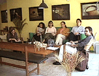

Las Dos Caras de la Musicología
en Venezuela
El Diario de Caracas
18-2-2000
Todos los que tenemos que ver con música en Venezuela debemos haber oído hablar de los esposos Isabel Áretz y Luis Felipe Ramón y Rivera. Por más de cuarenta años le dedicaron su vida al estudio de nuestro folklore y especialmente a la música de nuestro país. Luis Felipe murió en 1992 e Isabel dolorida se devolvió a la Argentina para allá fundar una nueva institución de Etnomusicología y Folklore. Asombroso. Nos sirve de lección, que esta señora ya cerca de los noventa años empiece su vida profesional de cero una vez más en una patria olvidada. La ausencia de su acompañante de pensamiento, de expediciones de campo en burro donde nadie había pisado, de edición prolífica de libros sobre el folklore (los únicos que todavía existen), de malabarismos políticos para fundar instituciones estables, la desaparición de su gocho poeta le hizo perder el sentido de continuar luchando por la investigación etnomusicológica en Venezuela, que después de tantos años de esfuerzos por institucionalizarlo, parecía que estaba en su peor estado.
Áretz nos dejó una institución que fundó y dirigió por casi su medio siglo de existencia, la Fundación de Etnomusicología y Folklore, Fundef, en Caracas, unos de los tesoros más apreciados en Latinoamérica por sus colecciones de cintas, videos, diapositivas, películas, fotos, libros, artesanías, provenientes de culturas mestizas e indígenas de todo el continente y del Caribe. Es un tesoro irrepetible ya que las culturas de donde se obtuvo todo este material único, han cambiado y se han transculturizado.
El vacío que deja un líder máximo al mudarse o ausentarse es el peor momento de cualquier ente social que lo haya rodeado. Sobretodo porque estas personas de grandes capacidades como lo es Áretz olvidan crear relevo o preparar seguidores, y sus súbditos serán siempre insuficientes por mínima comparación con el maestro. El vacío creado por el declive de Bolívar en 1830 que volcó al país en una anarquía de caudillos separatistas, lo siente cualquier familia al morirse los padres para dejar a sus hijos en vil pelea vergonzosa, inimaginable cuando en vida, por la herencia de sus ascendientes. Áretz no preparó su líder a seguir, aunque apostó a uno de sus más cercanos protegidos, Ronny Velázquez, pero ni él ni nadie en el ambiente parece poder continuar la labor que el duo Áretz-Ramón y Rivera forjaron.
Fundef se encuentra en su momento más grave. En sus paredes no existe ni un solo investigador etnomusicólogo acreditado ni programas externos o auspicios a líneas de investigación musicales. Su presidenta actual, Yolanda Salas, no tiene ningún conocimiento de música ni la acreditación académica necesaria para dirigir un instituto de investigación del nivel como lo ideó Áretz. Salas, todavía en "tesis-pendiente" aunque se hace llamar Doctora, no lleva a cabo ninguna investigación musical en el instituto que preside, para lo cual fue hecho y para lo cual el estado lo administra. ¿Dónde están los investigadores del folklore musical, los etnomusicólogos? ¿Cómo hacen para ir al campo por semanas a investigar si no hay ninguna institución que pueda brindarles el apoyo necesario? Si las instituciones del estado se convierten en armazones que apenas sirven para pagarse su nómina y el aire acondicionado y se desvinculan de su propósito inicial, en este caso la investigación, los investigadores tienen que encontrar otras soluciones, así como lo hizo Áretz.

Se acaba de crear, hace un mes, el "Círculo de Investigadores" como respuesta a este vacío. Los etnomusicólogos, todos especialistas devotos y acreditados en su campo, se han organizado fuera y aparte de Fundef, y se reunen los segundos domingos de cada mes a discutir temas escogidos anticipadamente para los cuales se reparten fotocopias de los artículos y lecturas referentes al tema para ir preparados. Se reúnen en la casa del investigador que propone el tema y se van rotando. El "Círculo de Investigadores" fue iniciativa de la Dra. Katrin Lengwinat, especialista en arpa y joropo central, quien trabajaba en Fundef como investigadora y fue removida por Salas a pesar de ser la única persona en todo el territorio nacional que cuenta con un Ph.D. en Etnomusicología, (Berlin). Hacía falta reunirse. Hacía falta discutir inteligentemente y en grupo. Los temas que se han puesto en la mesa han sido hasta ahora "Definiciones sobre música popular/folklórica/mesomúsica" y "La transcripción musical". El Círculo se constituye por ahora de Katrin Lengwinat, Ruth Suniaga, Mariana Delgado, María Teresa Henández, Carolina Rodríguez, Carlos Suárez, y el que suscribe. Para información sobre el próximo tema y el lugar del encuentro, por favor ver en el web abajo indicado o mándenos un correo-e. Están bienvenidos.
La Investigación Musicológica
El pensamiento actual reúne estas dos disciplinas conceptualmente, es decir, la etnomusicología y la musicología son la misma ciencia en fundamento. Hasta unas décadas la musicología se refería solamente a la música histórica, y la historia de la música es básicamente la música occidental académica. La etnomúsica se refería a todo el resto, la música de tradición oral, la música de los pueblos, comunidades indígenas, folklore, Africa, India, Latinoamérica, etc., utilizando aportes interdisciplinarios de la antropología y la sociología para entender que las músicas del mundo no son iguales porque sus culturas no son las mismas. Estas definiciones por supuesto, no podían abarcar la realidad ya que cualquier lugar del mundo y especialmente la ciudad, es un pote de culturas entremezcladas y en desarrollo. Se está decantando finalmente la aserción de que la música como objeto de estudio tiene que entenderse indivisiblemente dentro de una contexto cultural complejo y no es simplemente un grupo de notas como Re, Fa#, Do. Esta línea de pensamiento convierte la ciencia, sea para la música de los pueblos o para la música clásica escrita, en que TODO es etnomúsica, porque toda música es un fenómeno cultural y así hay que entenderla.
En Venezuela el pensamiento oficial mantiene todavía separadas las dos ramas en dos instituciones que nada tienen que ver o hacer una con la otra: Fundef para la etnomusicología (si realmente lo hiciera, ver arriba), y la Fundación Vicente Emilio Sojo, Funves, para la musicología histórica. Incluso operan en dos recintos diferentes. La proposición acuñada por el que suscribe, apoyada públicamente por José Peñín, el actual presidente de Funves, es que estas dos instituciones deberían ser una sola, como por ejemplo Instituto Venezolano de Investigaciones Musicales (IVIM), que albergue las dos fundaciones en una. El Estado se ahorraría gran parte de presupuesto de ambas fundaciones, cuyos montos son los dos más bajos de todos los entes tutelados del CONAC, al no tener que duplicar como actualmente se hace en las partidas de alquileres, servicios y administración. Esta plata podría ir más bien hacia la investigación y difusión.
El problema presupuestario de estos institutos "pobres", tan miserable que sólo sirve para mantener la administración y la casa funcionando pero para más nada, lo ha resuelto Peñín de una manera inteligente. Con un personal muy eficiente, polifacético y con vocación, reducido al máximo en números, puede dedicar el flaco presupuesto a la publicación de resultados de investigaciones en la Revista Musical de Venezuela, en partituras y discos compactos. Es una hazaña loable que un instituto diminuto como Funves haya podido publicar en 1999, un título cada quince días, record que le está pisando los talones muy de cerca a MonteAvila Editores.